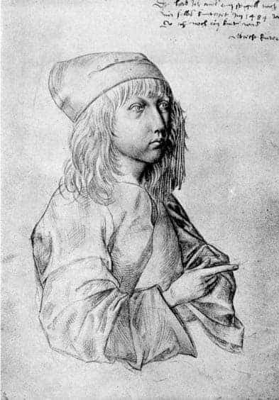
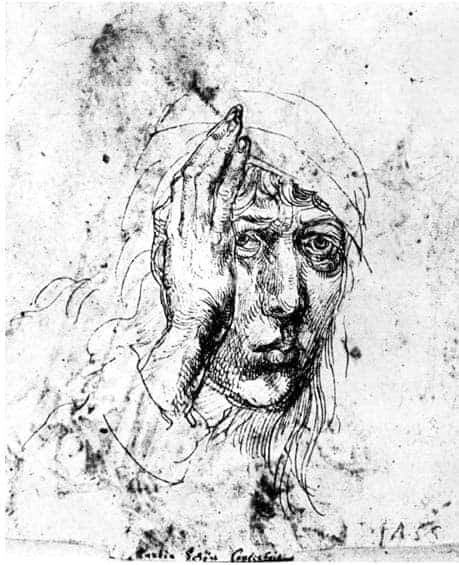
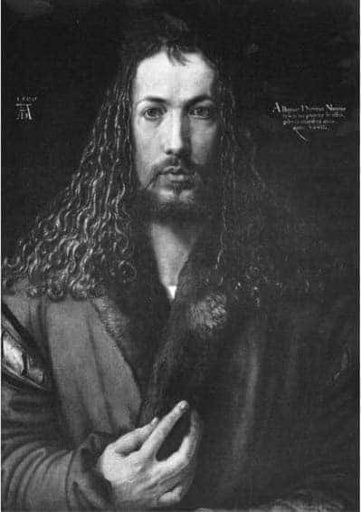
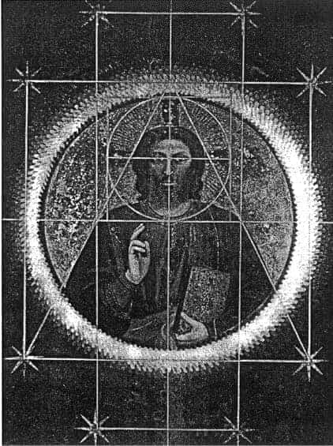
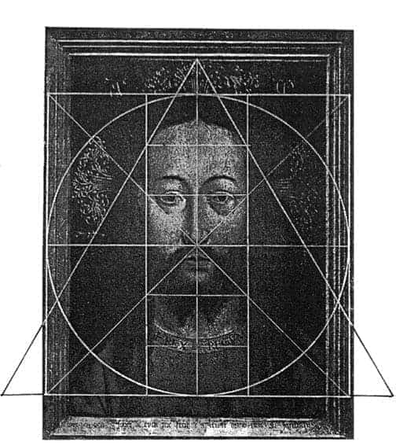
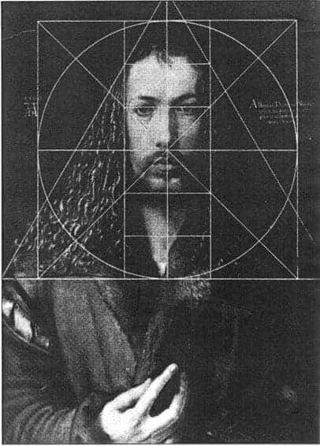
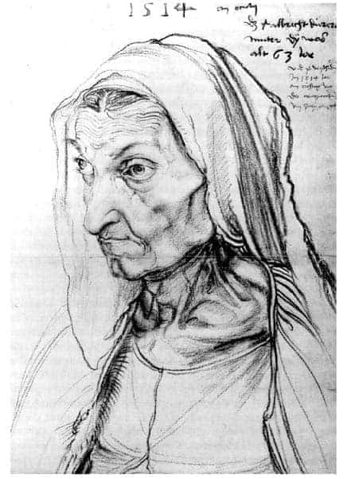
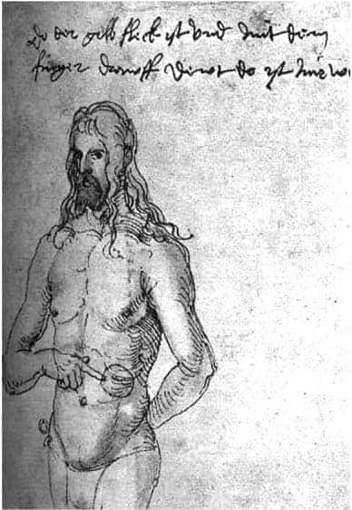
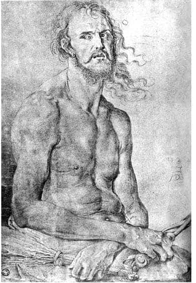

1.4. “BEN, NÜRNBERGLİ ALBRECHT DÜRER, 28 YAŞINDA KENDİ KENDİMİ YARATTIM.”
Albrecht Dürer, 21 Mayıs 1471 tarihinde, aynı adı taşıyan baba Dürer ile anne Barbara Holper’in üçüncü çocukları olarak, Nürnberg’de dünyaya gelmiştir.
Baba Dürer, ömrü boyu çok çalışan, ancak bu çalışmasının sonucunu alamayan, az kazanan usta bir kuyumcudur. Dürer ailesi 1455 yılında Macaristan’ın “Ajtas” yöresinden Almanya’ya, Nürnberg’e göç etmişlerdir. Ajtas, Macarca Ajto, Almancada “Tür” ya da “Dür” olarak söylenegelmiştir. Ailenin soyadının olasılıkla bu “Dür”den kaynaklandığı sanılmaktadır.
Dürer’in dedesi de kuyumculuk öğrenmiş, bu meslek bir anlamda dededen babaya ve sonra da toruna geçmiştir.
Albrecht Dürer, çok kısa süren bir temel okul eğitiminden sonra, babasının yanında kuyumculuk öğrenmeye başlamış, Dürer’in olağanüstü yanı hemen görülmüştür.
Dürer’in, (1484) yılında 13 yaşındayken, aynaya bakarak yaptığı kendi resmi bunun en somut kanıtı olarak değerlendirilmiştir. Dürer, burada Macar soyundan gelmenin kalıtı olarak değerlendirilen elmacık kemiklerindeki hafif çıkıntıları vurgulamayı bile görmezlikten gelmemiştir. Viyana Müzesi’nde bulunan bu resim, salt 13 yaşında bir çocuğun yaptığı bir çalışma olarak sanat tarihinin değil, bir insanın kendisini bu denli içtenlikle ve ayrıntılarıyla dışa vurmaya çalışmasının bir örneği olarak ruhbilim tarihinin de önemli yapıtlarından biri sayılır. Dürer, yaşamının sonraki yıllarında da ruhsal bunalıma düştüğü zamanlar sıklıkla kendi kendisinin resmini yapmış; bu bunalımlı an’larını olanca ayrıntılarıyla tespit etmeye çalışmıştır. Ruhbilimleri Dürer’in bu yapıtlarından çok şeyler öğrenmiştir. Alman resminin öncülü sayılan Dürer’in bu yalansız-içtenlikli tavrı sonraki yüzyıllarda da pek çok sanatkârı etkilemiştir. Örneğin, Beckmann, Otto Dix, Ernst Ludwig Kirchner, Oskar Kokoschka, Arnold Schönberg vb. gibi sanatkârlar ruhsal bunalımlara düştükleri zamanlar sıklıkla o anlardaki özbenliklerinin resmini yapma geleneğini sürdürmüşlerdir.
Dürer, 30 Kasım 1486 tarihinde, Nürnberg’in en önde gelen ressamı Michael Wolgemut’un yanında çalışmaya başlamış. Bu eğitimi 1489 yılına değin sürmüştür.
1490 yılında Avrupa’nın çeşitli kentlerini kapsayan eğitim gezisine çıkmış. 1491-92 yılları arasında çağının en önde gelen kültür merkezlerinden biri olan Basel’de tahta baskılar üzerinde çalışmış. Sonra Strasburg’a geçmiş. 1494’te Nürnberg’e geri dönmüş. 18 Mayıs ya da 7 Temmuz 1494 tarihinde, ailesinin de isteği üzerine Agnes Frey ile evlenmiştir.
Bu evlilikte her iki taraf da aradıklarını bulamamışlar. Agnes Frey, usta bir sanatkâr kuyumcuyla evlendiğini sanmış, ancak kocası dâhi bir ressam çıkmış. Dürer de kültür düzeyi oldukça mütevazi olan Agnes Frey’de düşlediği kadını bulamamanın bunalımını yaşamıştır. Dürer’in yaşamöyküsünü yazanlardan, Agnes Frey’i, Sokrates’in karısı Xanthippe’ye benzetenler olmuştur. Dürer-Agnes Frey evliliği çocuksuz sürmüş; bu durum olasılıkla birlikteliğin sıkıntılarını daha da artırmıştır. 1528 yılında, Dürer’in biraz erken ve beklenmedik ölümüne karısı Agnes Frey pek de üzülmemiş; hatta Dürer’in kimi arkadaşlarının kanısına göre, “Dürer’in bu ani ortadan kalkışını” biraz da sevinerek karşılamıştır.44, 45

Albrecht Dürer’in kendi resmi 1484, (27,5 x 19,6 cm.),
Viyana Sanat Müzesi.

Albrecht Dürer’in kendi resmi 1493,
Erlangen Üniversite Kitaplığı.
1494 yılında, Nürnberg’de büyük bir veba salgını çıkmış. Dürer, bu durumu da fırsat bilerek, yaşamına çok önemli değişiklikler getiren ilk İtalya gezisine çıkmış. Venedik’e gitmiş. Rönesans’ın büyük ustalarının resimlerini görmüş. Antikçağ sanatını biraz daha yakından izleme olanağını bulmuştur.
Dürer, daha ilk İtalya gezisinde, kendisi gibi bir kuzeylinin İtalya Rönesans sanatı düzeyinde resim yapacak birikime sahip olmadığını, kendi “kültür” dağarcığının bu konuda oldukça mütevazi olduğunu anlamış.46 Kusursuz güzelliğe ulaşmak için başka bir yöntem araştırma gerektiğini düşünmüş. Bunun için de insan vücudunun perspektif ve anatomi çalışmalarına önem vermesi gerektiğine karar vermiştir.
Alman kültürü, ne İtalya ne Fransa ne İngiltere ve hatta ne de Hollanda kültürü gibi evrensel stiller oluşturamamış. Buna karşın, birey-insanın ruhsal irdelenmesinde önemli gelişmeler yapmıştır.47 Alman kültürünün bu özel durumu üzerine pek çok varsayımda bulunulmuştur. Belki de Alman Ulusal Birliği’nin, Alman Devleti’nin geç kurulması, bireyin kendisini sürekli kriz halinde ve boşlukta duyumsayıp daha çok kendi bireysel trajedisiyle ilgilenmesine neden olmuştur. Bu konuda başvurulabilecek en temel yapıt hiç kuşkusuz, Walter Benjamin’in Alman Yas Oyununun Kökeni adlı klasik çalışmasıdır. Bu bağlamda Alman resim sanatı modern ruhbilimlerinin ortaya çıkmasında büyük katkılarda bulunmuş. Bu gelişmeler psikanalizin ortaya çıkmasında daha da somutlanmıştır.
Dürer, 1505-1507 yılları arasında, 18 ay kadar ikinci kez İtalya’ya gitmiş. Venedik, Roma, Floransa kentlerinde kalmış. Oldukça kapsamlı bir eğitim olanağı bulmuş. Özellikle, Leonardo, Michelangelo, Reffael gibi büyük ustaların yapıtlarından çok etkilenmiş. Yaşamının sonraki bölümlerinde sürekli olarak proporsiyon üzerine çalışmış. Dürer’in yaşamı sonraki yıllarda oldukça yalın ve sakin geçmiş. Bu ara bir iki kısa gezi dışında, 1520-21 arasında gene görece kısa süren bir Hollanda gezisi olmuş. Buna karşın, sıklıkla ruhsal bunalımlar geçirmiştir. Dürer, bu tür bunalımlı dönemlerinde kendisinin son derece gerçekçi resimlerini yapmıştır. Örneğin, 1522 yılında yaptığı kendi resminde içinde bulunduğu ruhsal durumu tüm içtenliğiyle sergilemiştir.
Dürer’in hümanist kişiliğinin oluşmasında yakın arkadaşlarının büyük etkisi olmuştur. Dürer’i etkileyen Nürnberg hümanistleri arasında, Willibald Pickheimer, Sebastian Brant, Konrad Celtis, Dr. Hartman Schedel, Yargıç Peter Danhauser öncelikle anımsanan isimlerdir.
Bunlar Dürer’e, mitolojiyi, antikçağ felsefesini ve sanatını, özellikle Yeniplatonculuğu tanıtmışlardır. 1490 yıllarında Nürnberg kent kitaplığında, çoğunu antikçağ klasiklerinin, Platon’un, Cicero’nun, Diogenes Laertios gibi yazarların oluşturduğu 371 cilt kitabın bulunduğu söylenir. Bu birikimin oldukça mütevazi görünmesine karşın, kitaplığın 1500 yıllarında Nürnbergli hümanistlerin gelişmesine katkısı büyük olmuştur.
Latince sanat anlamına gelen ars sözcüğü, İngilizce ve Fransızcaya art olarak geçmiştir. Dürer’in anadili Almancada ars’ın karşılığı “kunst”dur. Kunst sözcüğü, “kennen” (bilmek) ve “können” (yapmak) köklerinden gelir. Alman kültürünün gizini de içinde taşıyan bu son derece önemli tanımlama, sanatın ancak bilmek ve yapabilmek birlikteliği içinde söz konusu olabileceğini vurgular. Bu anlayışa göre iyi bir sanatkâr olmak için salt bilgi ya da salt yetenek yetmez.48
Dürer’in gelişmesinde büyük katkısı olmuş ozanlardan, ünlü Deliler Gemisi yapıtının yazarı Sebastian Brant, matematik bilmeden güzel resim yapılamayacağını savunmuş; Dürer de “Yetenekli, ama bilgisiz bir ressamın, sırlanmamış-parlatılmamış bir aynaya benzetilebileceğini” söylemiştir.
Ortaçağ bağnazlığından çıkış yolları arayan Dürer’e göre, tanrıyı en iyi görebilen ve anlayabilenler sanatkârlardır. Gerçek sanatkârlar, tanrının yaratıcı gücüne benzer bir yetenekle güzel yapıtlar verebilirler. Bu tür sanatkârlar, tanrıya en yakın insan-tanrılardır. Tanrısal yaratı ile sanatsal harmoni, simetri, geometri, matematik, astronomi arasında büyük yakınlıklar vardır. Güzel sanat yapıtları, tanrısal yaratıdan sonra hemen onu izleyen yaratılardır.
Yaratıcı insanın yeteneklerinin tanrısal olduğu görüşü hem Hıristiyan dinbilimlerini ve hem de Rönesans hümanistlerini etkilemiştir. Plotinus, bu iki eğilimi ortak bir payda altında toplamaya çalışmış ve tanrısal başarıyı “taklit ederek”, güzellikler yaratarak tanrısallaşmak önerisini getirmiştir. Bu tür bir bağlam içinde, özellikle resim-heykel sanatları insanı tanrısallaşmaya götüren en somut ve soylu yol olmuştur. Burada sorun hiç kuşkusuz dış görünümle birlikte ruhsal durumun canlandırılmasında düğümlenmiştir.
Hümanistler, saldırgan norm sistemlerinin egemen olduğu bir dünyada, barışçıl, sevecen, mutlu bir dünya/ütopya düşleyen insanın ruhsal özelliklerini yansıtmaya ayrıca özen göstermişlerdir. Rönesans hümanistleri, doğabilimlerini, geometriyi, matematiği çağlarının en devrimci silahları olarak kullanmışlardır.
Dürer de bir insanın kişiliğini yansıtmada teolojinin tutsağı olmaktan kurtulup, geometrinin, matematiğin, doğabilimlerinin bilinmesinin gerektiğine içten inanmış; bunu sanatının önkoşulu saymıştır. Dürer’e göre, hümanizmin temelinde sevgi vardır. Sevgi güzelliktir. Ve böyle bir sevgi-güzellik ancak geometri, matematik, simetri ve harmoniyle anlatılabilir. Dürer, ancak bu yoldan altınçağın arı güzelliğinin kavranabileceğini düşünmüştür.
Dürer’in hümanist anlayışına göre, hakikate ulaşmak sanat aracılığıyla olabilir. Sanat, hakikate ulaşmanın en somut yollarından biridir. Sanatkâr, hakikate en yakın insandır. Hakikate ulaşmanın araçları, geometri, matematik, simetri, proporsiyondur.
Dürer, Rönesans İtalyasının büyük ustalarının etkisiyle, tanrısal yaratıyla geometri, insan bedeninin simetrisi, proporsiyon arasındaki ilişkileri araştıran dört cilt kitap yazmış. Bu kitapların son düzeltmeleri üzerinde çalışırken, 1528 yılında, 57 yaşındayken ölmüştür. Bu dört ciltlik proporsiyon araştırmaları Dürer’in ölümünden kısa bir süre sonra basılabilmiştir.
1500 yılı, Avrupa düşün tarihinde bir dönüm noktası olmuştur. Bu tarihten sonra ortaçağ, hiç olmazsa düşünce düzeyinde iyiden iyiye gerilerde kalmış, dünyada yeni bir tarihsel çağ başlamıştır.
1500 yılı, Dürer için de son derece önemli olmuştur. Bu tarih öncelikle Dürer’in yaşamının hümanist sanatsal evriminin olgunlaşma noktasını belirlemiştir.
Mutlakiyetçi dünya görüşlerine karşı liberal burjuva devrimlerinin, reformasyonların başladığı bir dönemde Dürer, tüm bu gelişmeleri, yaptığı kendi resminde somutlaştırmıştır. Bu yapıt insanın özgürleşme süreci tarihinde önemli bir sıçrama taşı olmuştur denebilir.
Dürer’in, 1500 yılında yaptığı kendi resmi, hem kendi yaşamında hem de sanat ve ruhbilim tarihinde son derece yazgı belirleyici nitelikte olmuştur.
Burada Dürer, kendisini İsa gibi resimlemiştir. Hıristiyan dinbilim öğretisinde, öteden beri İsa benzeri bir yaşam, İsa’ya öykünme, “İsalaşma”, insanın İsa denli özgürleşmesi... yaradılışın en yüce aşaması, insanın olağanüstü özgürleşmesi olarak tanımlanmıştır. Bu öğretiden, İsa’ya benzeme “imitatio Christi” ya da “Christomorpho Gestaltung”, “Christustypus” düşünceleri, inançları oluşmuştur.49
Ancak ortaçağın koyu dönemlerinde, İsa’ya öykünmeler –Conformitas– bir tür günah sayılmış.
Fakat Rönesans’ın başlaması, İtalyan hümanisti Ficino’nun makrokozmos-mikrokozmos ilişkisini yeniden yorumlamasıyla yaşam yeni boyutlar kazanmıştır.
Ficino, Platon’un iki bin yıl önce “mutlak güzele mantıksal matematikle ulaşılabilir” öngörüsünü geliştirmiş ve İncil’deki “Liber Sapientia” ilkesinde “Sen her bir şeyi ölçü, sayı, ağırlık ile düzenledin,” şeklindeki tespitten hareketle, idea, tin, tanrı gibi bilinemezlerin sayılar ve çizgilerle gösterilebileceğini yazmıştır.50
Ficino’nun savlarının kökenleri eskilere uzanır. Hıristiyan dini yazmalarında İsa için, “sen insanların en güzelisin,” diye yazılmıştır (45. Psalm). Hıristiyan dinbilimleri İsa’da bulunduğunu öngördükleri kusursuz tinsel/ruhsal-bedensel güzelliği tanımlamaya çalışmış. Bunu sanatkârlardan istemişlerdir. Ancak İsa’daki bu güzelliğin yansıtılabilmesi için bazı önemli ilkeler öne sürülmüştür. Bunlar üç kümede toparlanabilir.51
a) Bütünlük, dürüstlük: Konunun bütünü İsa’nın dürüstlüğüne uygun, eksiksiz ve kusursuz –mükemmel– biçimde tamamlanmış olmalıdır. Onun doğasında bulunan hiçbir şey eksik olmamalıdır. Ayrıca onun bu nitelikleri daha da geliştirilerek sergilenmelidir.
b) Proporsiyon, oran, simetri: Kusursuzun tasviri, çeşitlilik ve ayrıntılar içinde bütünlüğü verebilen tam bir harmoni ile gösterilmelidir...
c) Arılık, açıklık: Onun içsel, tinsel doğası, en uygun, en güzel şekiller, desenler, renklerle yansıtılmalıdır. Bu ilkelere uygun olarak İsa’nın resminin yapılabilmesi Augustinus’a göre “şiirsel ihtişam düzeni” (Splendor Ordinis), Plotinus’e göre “eidos” “tanrısal ideayı” resimlemek demektir.52
Bu “kusursuz güzelliğin” nasıl bir yöntemle, teknikle yapıta aktarılacağı sorusu; sayıların, şekillerin, majik gizemli gücüyle... diye yanıtlanmıştır hep.
Ortaçağ sanatında “yaratının düzenine” matematik ve geometri ile ulaşılabileceği varsayılmış. Tanrının gizeminin, sayıların ve şekillerin gizemiyle yansıtılabileceği düşünülmüştür.
Konu şöyle toparlanabilir belki: Hıristiyan dinbilimsel merkezli düşünceye göre tanrı, kusursuzu, arılığı, açıklığı, aydınlığı, şeffaflığı simgeler. Tanrı, her zaman evrensel harmoninin kaynağıdır. İsa, bu tanrısal güzelliğin, evrensel harmoninin insan biçimindeki görünümüdür. İsa’nın resimlerinde tüm bu nitelikleri, insansal organlarda, ellerde, yüzde, gözlerde göstermek gerekir... İsa, tanrı ile insan arasındaki bağlantıyı, köprüyü oluşturur... Sanatkâr, İsa aracılığıyla tanrıya ulaşabilir...53
Paulus, Korintlilere yazdığı ikinci mektupta, “Aynaya bakan insan, tanrının peçesiz yüzünü görür...” (3/18) demiştir. Paulus’un bu tespiti, Rönesans sanatkârlarının temel ilkelerinden biri olmuştur...54
Dürer, bu hümanist birikimden hareketle insanın kendi içinde saklı bulunan tini/ideayı/tanrıyı, kendi yüzünde yansıtarak özgürleşebileceğini düşünmüş... Bu mertebeye erişmek, özgürleşmek için de, insanın kendisini geometri, simetri, harmoni kuralları içinde –ve kadın-erkek ölçülerini birbirleri içinde kaynaştırıp– resmedebileceğini öngörmüştür.
Dürer, bu savdan hareketle, 1500 yılında yaptığı kendi resminde, tanrı ile yaratıcı insan arasındaki ilişkiyi ve benzerliği (hatta özdeşliği) kendisinde somutlaştırmıştır. Antikçağ felsefesi ile Hıristiyan dinbilimini birleştirme denemesine giren Dürer, bu resminin üzerine, “Ben, Nürnbergli Albrecht Dürer, 28 yaşında, kendi kendimi yarattım” diye bir not düşmüştür.55
Dürer’in bu tür bir yöntemle, kendi-özbenliğini resimlemesi, dünyanın dönüm noktalarından olan 1500 yılına, –insanın özgürleşmesi yoluna– yeni bir boyut daha eklemiştir. Dürer’in bu yapıtında, özellikle Kuzey Avrupa ve Alman kültürünün yeni bir hümanist erdem anlayışına ulaştığı kabul edilmiştir.
Dürer uzmanlarından Winzinger, Dürer’in uyguladığı yöntemi ortaçağda bilinen geometrik çember-üçgen-dörtgen şemalarıyla gerçekleştiğini nefis bir araştırmayla bizlere göstermiştir. Winzinger’e göre, İsa üzerinden tanrıyı belirlemek için, geometrik şekiller, kutsal üçgen ve dörtgenler kullanmak geleneği Bizans ikonagrafi ustalarından İtalya’ya geçmiştir. Floransalı Giotta (1266-1337), Padua’da, Arena Kapellası tavanına 1306 yılında yaptığı İsa’yı bu tür geometrik çember-üçgen-dörtgen teknikleri kullanarak resimlemiştir... Ancak, bu tekniği geliştiren, Jan van Eyck (1390-1441) olmuştur. Eyck’in 1438 yılında yaptığı İsa resmi, bunun somut örneğidir. Dürer’in Eyck’in tekniğini geliştirerek kullanmış olabileceği düşünülmektedir...56

Albrecht Dürer’in kendi resmi (1500). Ihlamur ağacı üzerine yağlı boya (67 x 49 cm.) Münih Eski Resim Müzesi (Alte Pinakothek).
Resmin sağ üst köşesindeki yazı: “Ben, Nürnbergli Albrecht Dürer,
28 yaşında kendi kendimi yarattım”.
20 Eylül 1502’de Dürer’in babası ölmüş. Babasının ölümü Dürer’i çok etkilemiş. Günlüğüne, “Babamın ölümü beni büyük acılara düşürdü,” diye yazmış. Annesi Barbara, Dürerlerin yanına taşınmış, birlikte yaşamaya başlamışlardır. Yine bu ara Dürer’de ciddi melankolik krizler, ruhsal dalgalanmalar görülmüş.
1512 yılında, Kaiser Maximilian, 3-13 Şubat tarihlerinde Nürnberg’e gelmiş. Dürer’le görüşmüşler. Kaiser, Dürer’e övgülerde bulunmuş. Yeni yapıtlar ısmarlamış, ayrıca yılda 100 Gulden –gelire– bağlamıştır.
Dürerlerin ekonomik durumu artık biraz düzelir gibi olmuş. Çevresinde, onun sanatını kabul edenlerin sayısı çoğalmış. Fakat izleyen yıllarda Dürer’in kendisinde ve annesindeki melankolik krizler yeniden artmış. Dürer’in içine girdiği bu ruhsal durumu, ünlü Alman hümanisti Melanchton, “melancholia generosissima Düreri” diye tanımlamıştır.57
Dürer, 19 Mart 1514’te annesinin olağanüstü gerçekçi bir resmini yapmış. Barbara Dürer’in yüzünden ruhunun acılar içinde kıvrandığını –bu resme bakan herkes– duyumsayabilir.
16 Mayıs 1514’te Dürer’in annesi Barbara Dürer ölmüş. Dürer yeniden büyük acılar içinde kalmış. Günlüğüne, “Dindar anam 18 çocuk doğurdu, bunları büyüttü, vebaya yakalandı, diğer başka ağır hastalıklar geçirdi... ağır yoksulluk çekti. Çok olumsuz koşullarda yaşadı, çok acı çekti... anamın ölüsü sağlığındakinden çok daha rahat ve sevimli görünüyor...” diye yazmıştır.58
Dürer, 1513/14 yılları arasında, sanatının doruk noktasını oluşturan “Şövalye, Ölüm ve Şeytan”, “Aziz Hieronymus” ve “Melencolia I” gravürlerini yapmıştır.
Melencolia I gravürü ile annesinin ölümü ve kendi ruhsal krizleri arasındaki bağlantı hep tartışılagelmiştir.

Giotto’nun Padua Arena Kilisesi’ne yaptığı İsa.

Jan van Eyck, Berlin, İsa.

Winzinger’in Dürer’in resmine getirdiği yeni yorum.

Albrecht Dürer’in annesinin resmi, 1514, (42,1 x 30 cm.)
Berlin Devlet Müzesi.

Albrecht Dürer’in kendi resmi, Hasta Dalağım Acıyor,
1512-13, Bremen Sanat Müzesi.

Albrecht Dürer, Acı Çeken Adam, 1522, Bremen Sanat Müzesi.
Analitik yönelimli ruhbilimciler, bu bağlantıyı –Freud’un ünlü araştırmasından da esinlenerek– Leonardo da Vinci ile annesi ve Mona Lisa arasındaki ilişkiye benzetmişlerdir.
Kaiser Maximilian’ın 1519’da ölümü, Dürer’i olumsuz yönde çok etkilemiş. Dürer, günlüğüne, “Dürer’in durumu kötü,” diye yazmıştır. Reformasyona ve Martin Luther’e büyük umutlar bağlamış; Luther’le görüşme olanakları aramış. Ancak bağnaz boyutlarda melankoli ve melankolik insan karşıtı Martin Luther ile Dürer’in yüz yüze gelip konuşma olanakları yaratılamamıştır. Dürer’in bu son derece sıkıntılı, bunalımlı ve kendisini olağanüstü yalnız ve terk edilmiş duyumsadığı yıllarda Rotterdamlı Erasmus onun en güvenilir dostu olmuştur.